Télécharger le package d'installation
Depuis doc.doxense, l’extranet dédié aux partenaires Doxense, téléchargez le package d'installation de la Console de Supervision Watchdoc (WSC).
Sur le serveur destiné à héberger WSC, décompressez le dossier d’installation .zip. Ce dossier contient les fichiers d’installation du framework .NET ainsi que le fichier Supervision Bootstrapper.exe.
Installer WSC
-
Dans le dossier d'installation décompressé, cliquez sur l'exécutable Supervision Bootstrapper.exe pour lancer l'installation ;
-
l'exécutable vérifie la présence de .Net Framework et l'installe si ce n'est pas le cas ;
-
dans l'interface Watchdoc Supervision Console setup, lisez les conditions, cochez la case pour accepter les conditions, puis cliquez sur le bouton Install :
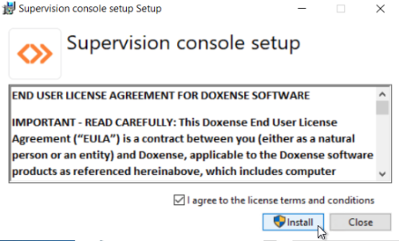
-
dans l'interface de bienvenue, cliquez sur le bouton Next pour poursuivre l'installation :
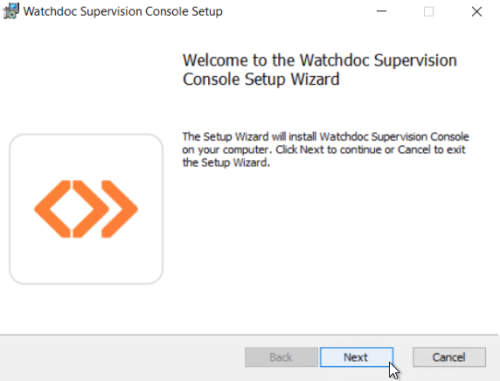
-
dans l'interface Options, choisissez la langue d'administration et saisissez le mot de passe pour le compte de maintenance donnant un accès à toutes les fonctions d’administration de WSC.
-
Par défaut, le mot de passe est "changeme". Nous vous recommandons fortement de choisir un nouveau mot de passe.
-
dans l'interface Destination Folder, indiquez le chemin vers le dossier dans lequel doit être installé WSC ou conservez le dossier par défaut :
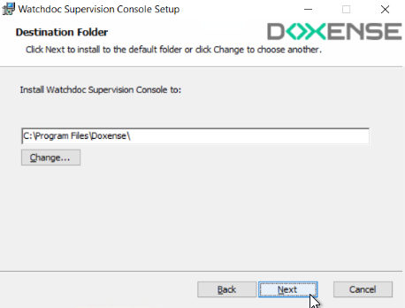
-
une fois le dossier d'installation défini, cliquez sur Install pour poursuivre l'installation :
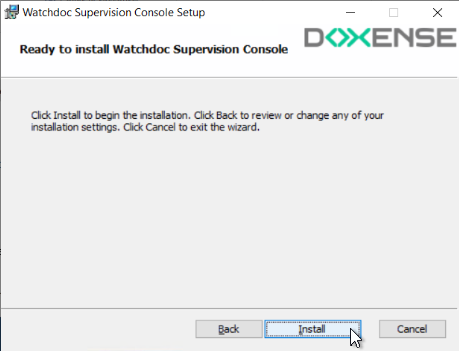
-
un curseur indique la progression de l'installation :
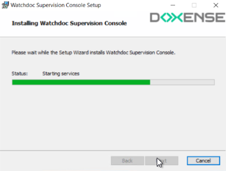
-
Au terme de l'opération, un message indique le succès de l'opération. Cliquez sur Finish pour terminer l'installation :
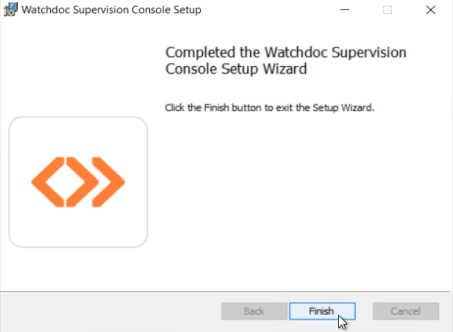
→ au cours de l'opération, l'icône a été ajoutée en raccourci sur le bureau du serveur.
[Etape supprimée le 23/10/2023 pour la version Watchdoc V6 dans laquelle il n'est plus nécessaire dedisposer d'une licence spécifique à WSC]
Réinitialiser la licence WSC
Si vous installez Watchdoc et WSC pour la première fois, vous n'avez pas à procéder à cette étape : la licence WSC installée par défaut est gratuite (FREE) et ne nécessite aucune modification.
En revanche, si vous mettez à jour une version WSC antérieure à la V6, vous devez procéder à la réinitialisation de licence en respectant les étapes suivantes :
-
Depuis le bureau du serveur, cliquez sur le raccourci de la Console de Supervision pour accéder à son interface d'administration ;
-
authentifiez-vous en tant qu'administrateur pour accéder au Menu Principal de WSC :
-
depuis le Menu principalde WSC, cliquez sur la section Configuration avancée :
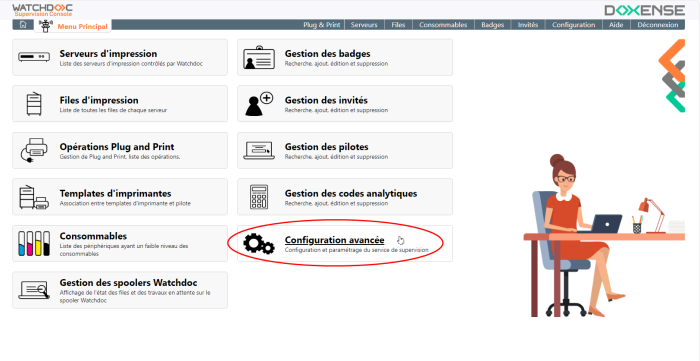
-
depuis l'interface Configuration avancée, cliquez sur la section Gestion de la licence :
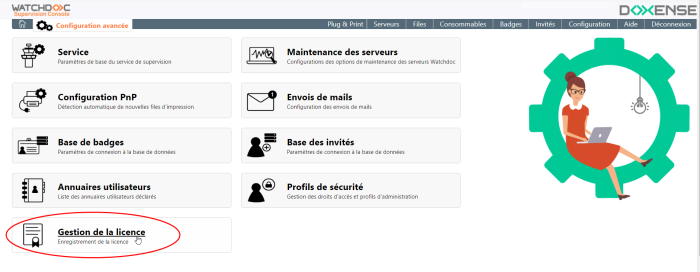
-
Dans l'interface Gestion de licence > Licence actuelle, cliquez sur le bouton Réinitialiser la licence :
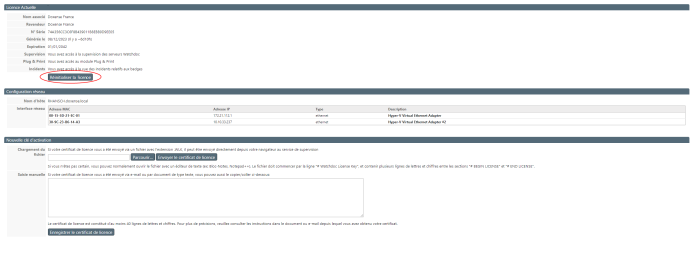
-
→ Dans la section Licence actuelle, les valeurs Nom et Revendeur affichent la valeur FREE.
-
[Etape supprimée le 23/10/2023 pour la version Watchdoc V6 dans laquelle il n'est plus nécessaire dedisposer d'une licence spécifique à WSC] dans l'interface Gestion de la licence, cliquez sur le bouton Parcourir, pour sélectionner le fichier de licence fourni par Doxense® ;
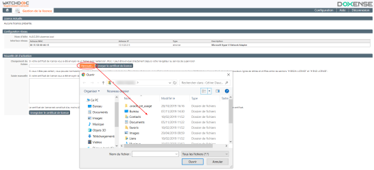
-
Vous pouvez aussi saisir dans le champ Saisie manuelle le texte situé entre les balises # BEGIN LICENSE et # END LICENSE du fichier de licence qui vous a été fourni par Doxense :
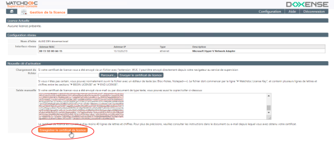
Cliquez ensuite sur
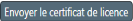
Envoyer le certificat de licence ou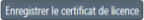
en fonction du mode de sélection de la licence.Cliquez sur le bouton pour revenir au menu principal : si la licence est valide, les sections auparavant grisées sont désormais actives.